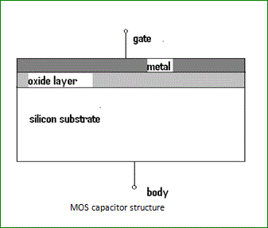
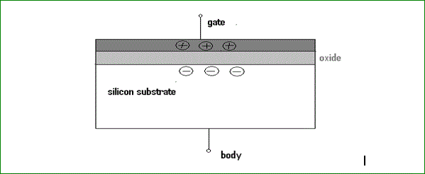
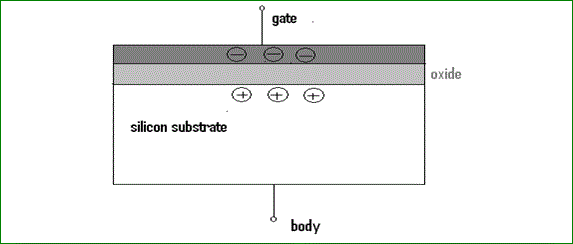

The acronym MOS stands for Metal oxide semiconductor.
An MOS capacitor is made of a semiconductor body or substrate, an insulator and a metal electrode called a gate. Practically the metal is a heavily doped n+ poly-silicon layer which behaves as a metal layer. The dielectric material used between the capacitor plates is silicon dioxide (SiO2). The metal acts as one plate of the capacitor and the semiconductor layer which may be n-type or p-type acts as another plate.
capacitor " width="337" height="287" class="alignleft size-full wp-image-4378" />
The capacitance of the MOS capacitor depends upon the voltage applied on the gate terminal. Usually the body is grounded when the gate voltage is applied.
The flat band voltage is an important term related to the MOS capacitor. It is defined as the voltage at which there is no charge on the capacitor plates and hence there is no static electric field across the oxide. An applied positive gate voltage larger than the flat band voltage (VGB > VFB) then positive charge is induced on the metal (poly silicon) gate and negative charge in the semiconductor. The only negative charged electrons are available as negative charges and they accumulate at the surface. This is known as surface accumulation.
capacitor " width="599" height="246" class="aligncenter size-full wp-image-4379" />
If the applied gate voltage is lower than the flat band voltage (VGB < VFB) then a negative charge is induced at the interface between the poly-silicon gate and the oxide and positive charge in the semiconductor. This is only possible by pushing the negatively charged electrons away from the surface exposing the fixed positive charges from donors. This is known as surface depletion.

The MOS capacitor is not a widely used device in itself. However, it is part of the MOS transistor which is by far the most widely used semiconductor device.
The typical capacitance-voltage characteristics of a MOS capacitor with n-type body is given below,
Capacitance vs. Gate Voltage (CV) diagram of a MOS Capacitor
Capacitance vs. Gate Voltage (CV) diagram of a MOS Capacitor. The flatband voltage (VFB) separates the Accumulation region from the Depletion region. The threshold voltage (VTH) separates the depletion region from the inversion region.
 by
by {kind=link}
{kind=link}
{kind=link}
{kind=link}